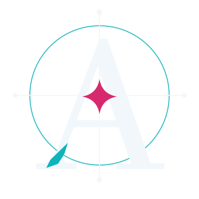
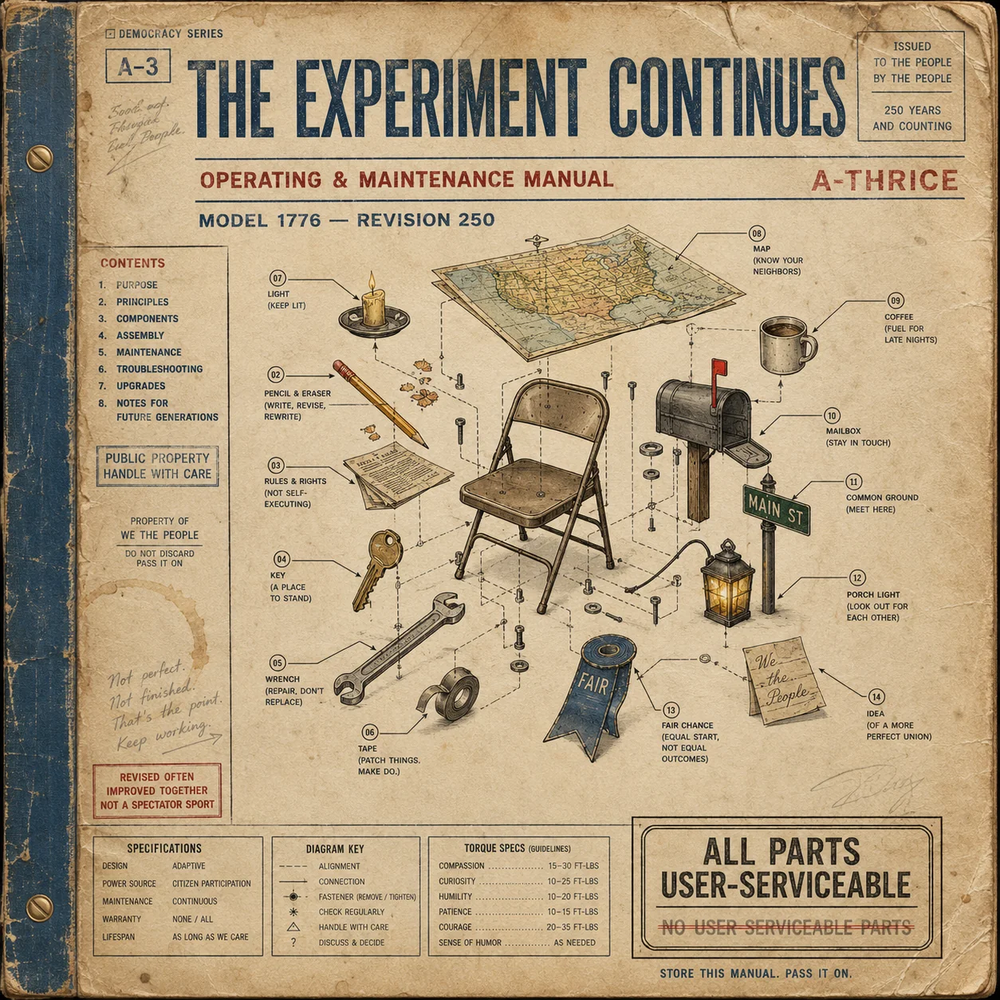
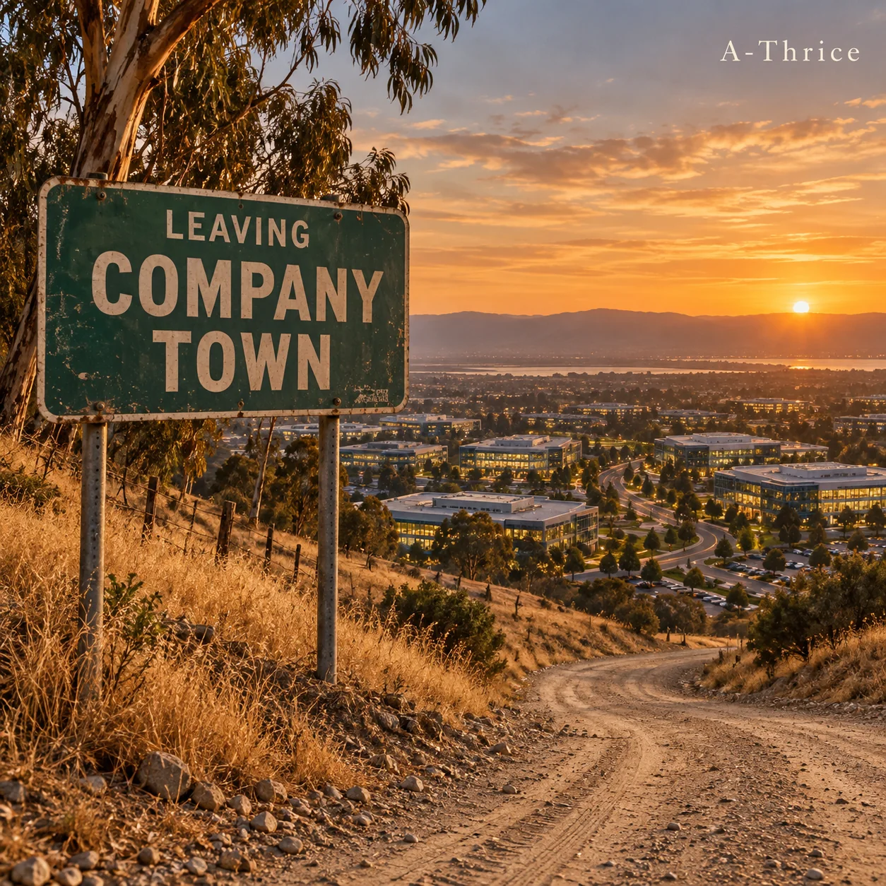
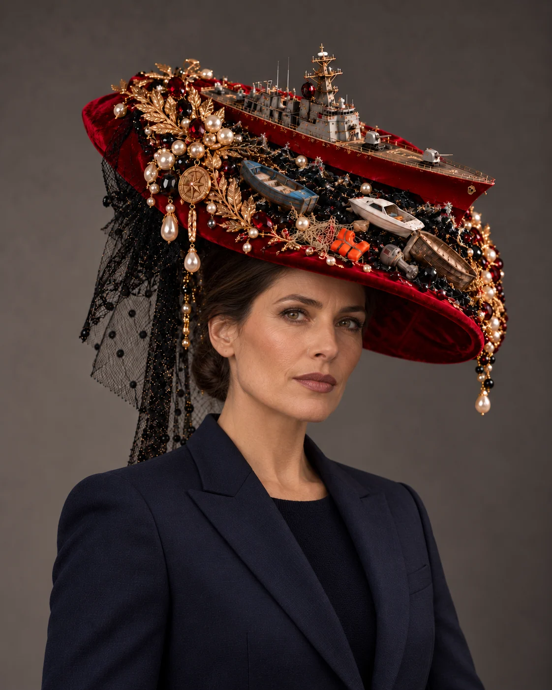
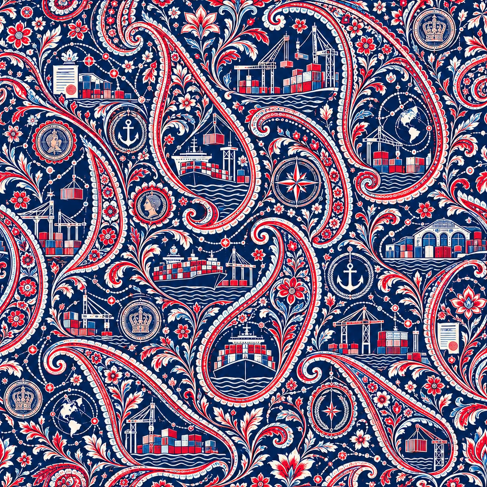
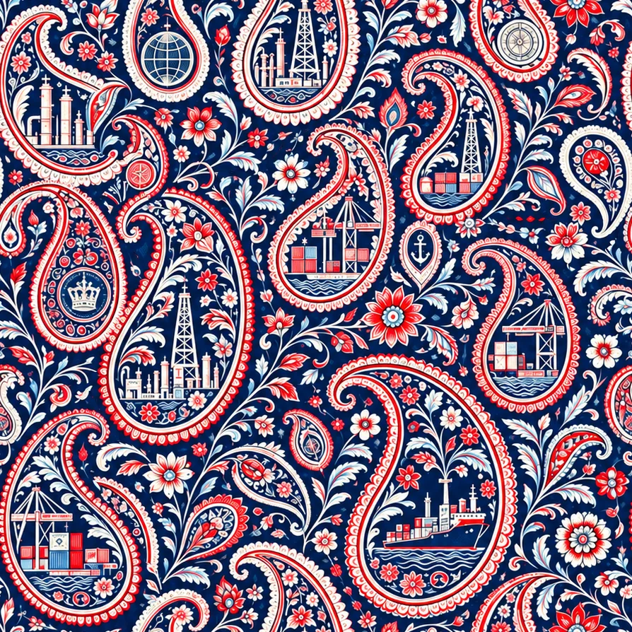

Citizen of Empire
A personal reclamation of identity from the checkboxes and stereotypes left behind by empire.

Six musical worlds. Two exhibitions. Original prints, archives, and a growing library of things worth questioning. Enter where the colour catches your eye. Stay for what it reveals.

ART / SYSTEMS / HUMAN STORIESSix visual and sonic worlds: political hip-hop, diaspora, surveillance, climate, civic life and Silicon Valley. Explore the story and full discography behind each record.
A personal reclamation of identity from the checkboxes and stereotypes left behind by empire.
 WIDELY DISTRIBUTED
WIDELY DISTRIBUTEDA system optimized for fear: how alerts, platforms, consent screens and institutions teach us to live in permanent emergency.
 WIDELY DISTRIBUTED
WIDELY DISTRIBUTEDBorders, ports, museums and software: a fuller map of what survives an empire and what migration makes from it.
An environmental dance record where desire, consumption and a warming planet occupy the same night out.

SOFT RELEASE · SOUNDCLOUD / BANDCAMPA 250th-birthday letter to an unfinished United States, told through the everyday labor of democracy.

IN PRODUCTION · TRACKLIST SUBJECT TO CHANGECalifornia dust and server heat: Silicon Valley as a modern company town that eventually moves inside the worker.
THE SURFACE IS SEDUCTIVE.
THE SUBTEXT IS THE WORK.
Both exhibitions explore power, migration and presentation. One interrogates military spectacle through couture; the other follows the objects and routes of empire through textile, sculpture, sound and archives.

EXHIBITION 01 / DIGITALThirteen military actions rendered as impossibly luxurious headwear. Beauty, triumph, mourning and their uneasy proximity.
ENTER THE EXHIBITIONAn installation of objects, fabric, sound and historical archives following the movement of people and culture across the Indian Ocean and empire.
EXPLORE THE EXHIBITION ↗For Return to Sender, A-Thrice developed original paisley-inspired textile prints that conceal cargo ships, containers, cranes and the architecture of commerce inside ornament.
The prints belong to the exhibition's artistic language, but they also deserve a home of their own in the larger A-Thrice portfolio.


Music can start an argument, a conversation or a curiosity. These companion materials are for people who want the historical context, the source trail, or an invitation to participate.
A companion guide to an album about citizenship as participation: argue, welcome, remember, repair, revise, keep and continue. This is the available guide, not a promised additional workbook.
OPEN COMPANION GUIDE (DRIVE ACCESS MAY APPLY) ↗The research, callbacks and layered readings behind the songs. Genius hosts the current public annotation collection.
READ ON GENIUS ↗Selected institutional sources and reading trails associated with the albums and both exhibition projects.
OPEN SOURCE INDEX ↗Public research links do not reproduce unpublished artist annotation packets. The Companion Guide V3 currently links to the artist-controlled Drive file; access settings should be checked before launch.
A-Thrice is a London-based multidisciplinary artist making alternative political hip-hop, conceptual installations, textile prints and research-driven visual work. The projects explore power, identity, migration, democracy, technology and the stories that become ordinary when systems are left unquestioned.
The practice moves between intimate histories and institutional machinery. A lyric might become a map; a textile might hide a port; a decorative hat might open a question about military spectacle. Across the media, the work combines satire, curiosity, visual pleasure and a demand to look again.
The songwriting and artistic concepts are developed by A-Thrice. AI-assisted tools are used in parts of music production and digital image-making. The resulting artworks and exhibition environments are presented as creative works, not documentary photographs of physical installations.
Rather than a definitive list of personal heroes, this is a proposed way to show the artistic and intellectual traditions A-Thrice works alongside. We can replace these labels with your own named influences after you review them.
Storytelling, sampling, political wit and lyrical double meanings.
Adornment, diaspora, sculpture and the everyday objects that carry power.
Oral histories, official records, family memory, contested narratives.
Listen to six album projects, move through two exhibitions and follow the threads into an expanding reading room.